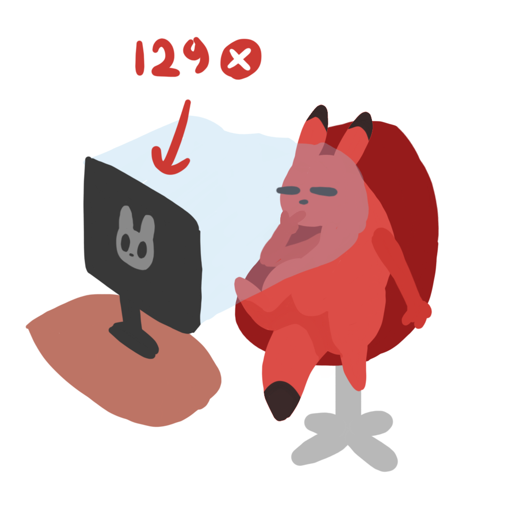

Обо мне:
- Я учусь на третьем курсе КТ ИТМО
- Я стажёр-разработчик в Геосервисах Яндекса
- Я прошла три курса по C++
- У меня ужасное чувство стиля :)
Небольшая биография:
Я родилась в городе Воронеже и с восьмого класса начала заниматься
программированием. Поначалу я изучала алгоритмы и структуры данных,
но оказавшись в Яндекс Лицее поняла, что спортивное программирование
-- не самый интересный вид программирования. Потом я поступила на КТ
ИТМО, и сначала мне всё нравилось, но вскоре я поняла, что ненавижу
математику. К счастью, были предметы, благодаря которым я не жалела,
что пошла на КТ, например курс C++, курс продвинутого C++ и курс C++
от ШАДа. Недавно я устроилась на стажировку в Яндекс, чтобы получить
опыт бэкенд разработки на C++, и мне очень нравится!
Но на самом деле мой любимый ЯП это не C++, а haskell.
Топ 5 моих любимых цветов:
| Цвет | Код | Комментарий |
|---|---|---|
|
|
#AEB6FF | Это очень нежный и красивый цвет, который я, кстати, использовала в этом документе выше :) |
|
|
#FF871D | Больше всего в этом цвете мне нравится его градиент с красным. А еще у меня стул в общаге такого цвета, потому что это очень весёлый цвет) |
|
|
#9A3586 | Мне нравятся очень темные цветы, а такой цвет встречается в черных тюльпанах. |
|
|
#DEA3ff | Мне кажется, этот цвет хорошо сочетается с предыдущим, но никому кроме меня так не кажется... |
|
|
#38FFFF | Этот цвет любят все :) |
Почетные упоминания:
Мой рисунок:
Это буквально я...